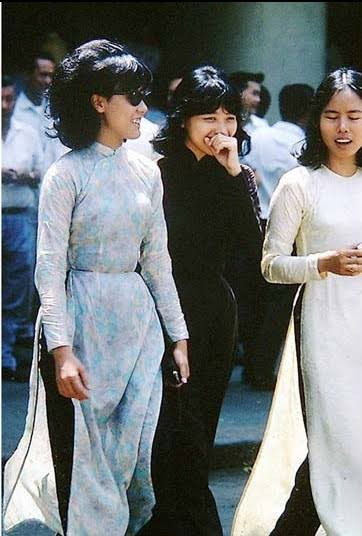
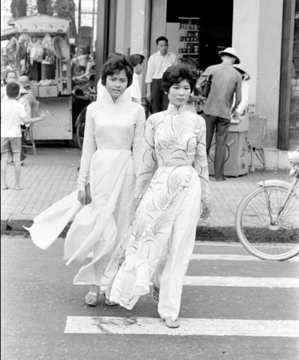

GIAI ĐOẠN 06
Áo dài Raglan
Định hình phong cách áo dài hiện đại.


LỊCH SỬ ÁO DÀI · 06
Áo dài Raglan
Đến năm 1960, áo dài Raglan ra đời, đánh dấu bước chuyển quan trọng trong thiết kế áo dài. Điểm đặc biệt của kiểu áo này là đường cắt tay áo chéo từ cổ xuống vai theo góc 45 độ, giúp áo ôm sát cơ thể nhưng vẫn tạo cảm giác thoải mái.
Áo dài Raglan nhanh chóng trở thành tiêu chuẩn của áo dài hiện đại và được sử dụng phổ biến cho đến ngày nay. Thiết kế này giúp tôn lên đường cong tự nhiên của người phụ nữ, đồng thời khắc phục những nhược điểm về độ cứng của các kiểu áo trước đó.
← Quay lại hành trình